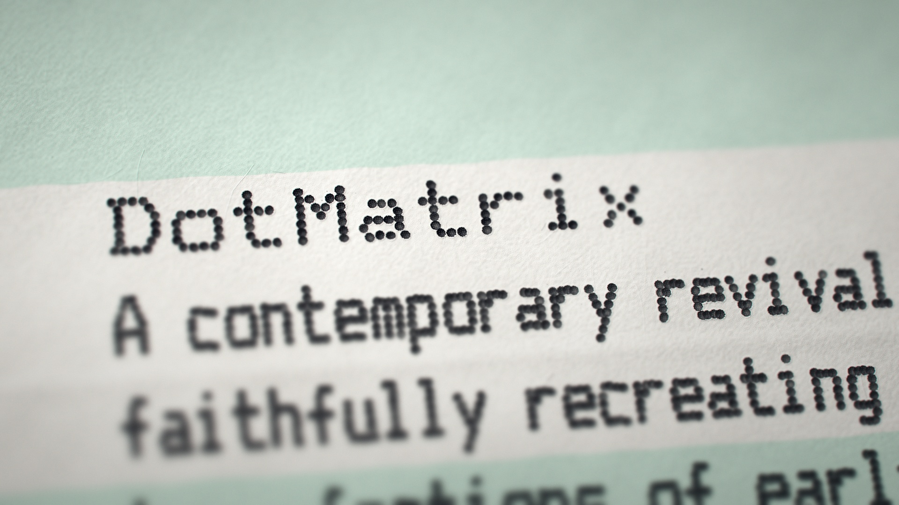

DotMatrix is a contemporary revival of classic 1980s dot matrix printing, faithfully recreating the texture, rhythm and mechanical imperfections of early impact printers. Inspired by the iconic Epson FX-80, it captures the distinctive look of inked pins striking paper—bringing authentic retro computing aesthetics into modern digital typography.
Designed for nostalgia-driven interfaces, ASCII/ANSI art and coding environments, DotMatrix balances historical accuracy with practical usability. For true scale, use it at 10 pt: a row of dots is then 1/72 inch, the spacing of the 9 pins of the print head.
DotMatrix comes in two groups: DotMatrix Mono, the monospace fonts, and DotMatrix Sans, the same letters in the printer's proportional mode. Each group has 6 families, one for each pitch of the printer, in 4 styles: you pick the mode by picking the family.
| Epson FX-80 mode | Pitch (cpi) | DotMatrix Mono family |
|---|---|---|
| Pica | 10 | DotMatrix Mono SemiExpanded |
| Elite | 12 | DotMatrix Mono |
| Compressed | 17.16 | DotMatrix Mono Condensed |
| Expanded Pica | 5 | DotMatrix Mono UltraExpanded |
| Expanded Elite | 6 | DotMatrix Mono ExtraExpanded |
| Expanded Compressed | 8.58 | DotMatrix Mono Expanded |
Proportional mode is DotMatrix Sans, in the same widths, for example DotMatrix Sans Condensed. The styles are Regular, Bold, Italic and Bold Italic: Bold is the printer's double strike, with the second strike half a row lower.
The plain DotMatrix Mono is Elite, the 12 characters per inch mode. At 10 pt it is 0.6 em wide, the cell of the common coding fonts, so it fits the column settings of code editors and terminals. Its line height is 12 rows, 1.2 em: the 6 lines per inch of the printer.
It features:
To browse all its glyphs, visit gissio.github.io/font_DotMatrix.
To contribute to the project, visit github.com/Gissio/font_DotMatrix.
